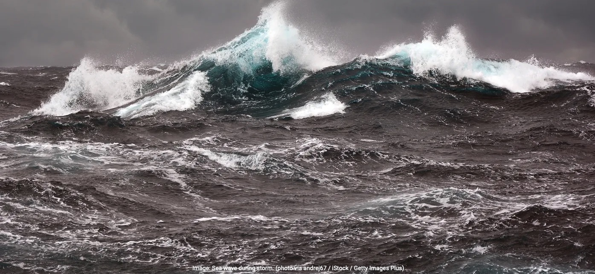
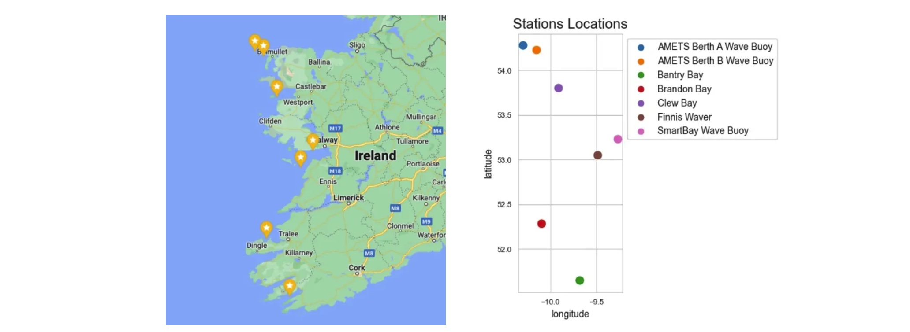

This section explores a time series data extracted from an intelligent buoys network stationed along the Irish coastline available here. A smart buoy is a sensor-equipped buoy to collect marine and aquatic data. These buoys' measurements encompass various indicators linked to oceanic conditions, encompassing parameters such as sea temperature, wave height, and sea water velocity. The complete Python code is available here.
Contents
- Loading The Data
- Type Down-casting to Reduce Memory Usage
- Feature Understanding
- Target Variable
- Correlation
- Conclusion
Loading The Data
The dataset include 14 columns and 1,845,100 rows. The data is recorded from January 2020 to July 2023. A concise overview of the content within each column is listed below (full column explanation is here)
longitude: distance east or west of the prime meridian latitude: the measurement of distance north or south of the Equator time: record detection time station_id: station identifier instrument: Name of used instrument PeakPeriod: sea surface wave period at maximum density PeakDirection: Sea surface wave direction UpcrossPeriod: Sea surface wave period SignificantWaveHeight: sea surface wave significant height SeaTemperature: sea surface temperature Hmax: Sea surface height of the highest wave THmax: period of the highest wave MeanCurDirTo: mean direction of the sea water velocity MeanCurSpeed: mean sea water speed
Type Down-casting to Reduce Memory Usage
This is a large dataset and it takes about 197MB of RAM. This amount is decreased to about 127 MB by down-casting the categorical variable types from string to category as well as some of the float64 variable types to float32.
Feature Understanding
The dataset consists of records tied to 7 distinct stations. Every station is associated with a unique geographical location defined by its latitude and longitude coordinates. The image below illustrates the distribution of data records across these stations and further designates the instrument type employed by each station. Notably, in figure-1 the presence of a solitary bar for each station indicates that they exclusively utilize one of the two available instrument types. Using longitude on the X-axis and latitude on the Y-axis, we can also visualize the relative positions of the stations on the map.
Figure 1: A dual-bar arrangement for each station. Each bar's color represents a unique instrument used at a station. The exclusive presence of orange or blue bars for each station emphasizes that a single instrument type is used per station.
Figure2: Stations locations plotted from data vs. the actual map
Moving forward, we determine whether the two instruments play distinct roles in recording various variables within the dataset. Upon grouping the data by instrument type, it becomes evident that the "SeaTemp," "MeanCurDirTo," and "MeanCurSpeed" variables are absent in "Datawell WaveRider MkIII" records. As a result, we can conclude that these features are exclusively recorded by the "Datawell WaveRider 4" instrument and at stations using this particular instrument.
Figure 3: Count of Records for Each Feature by Instrument
Target Variable
Our initial step involves plotting the historical "SWH" (Significant Wave Height) data for each station. These plots visualize a comprehensive understanding of the target variable behavior across different stations/locations.
Figure 4: Significant Wave Heigh (SWH) time series per station. Wave heights and the amount of recorded data for SWH is the highest in the first two stations. The first 3 stations are using the "Datawell WaveRider MkIII" instrument and the rest are using "Datawell WaveRider 4" instrument.
"AMETS Berth B Wave Buoy" station stands out with the highest number of SWH recordings, totaling 490,836 records. "AMETS Berth A Wave Buoy" station also boasts a substantial count of recordings. However, the remaining stations exhibit an inconsistent and comparatively lower volume of significant SWH records.
Next, we'll zoom in and examine a one-month plot of the data to gain a more detailed perspective. Hmax and SWH time series show an obvious alignment which is expected, as Hmax denotes the peak wave height within the observed wave cycle, mirroring the behavior of SWH.
Figure 5: One-month representation of SWH (Significant Wave Height) alongside Hmax (Maximum Wave Height), both displaying a congruent trend.
Correlations
Feature correlations aids in understanding the data's internal structure, guiding decisions related to feature engineering and model selection. We visualize the correlation between features using a heat-map. By visualizing correlations, we can identify redundant or highly correlated variables. This helps in feature selection by choosing the most relevant variables while eliminating those that contribute similar information.
Figure 6: Heat-map provides a graphical representation of the correlation matrix, where each cell's color intensity corresponds to the strength and direction of the correlation between two variables.
According to the heat-map:
- The most correlated feature to the target variable SWH is Hmax with 0.98 value.
- The next correlated feature is UpcrossPeriod with 0.78 value.
- Hmax and UpcrossPeriod are highly correlated to each other with 0.74 value.
Conclusion
The Exploratory Data Analysis (EDA) revealed valuable insights into the relationships and distributions in the data. The heat-map visualization further revealed interdependencies between variables, guiding us in feature selection and potential avenues for predictive modeling. As we move forward, the insights gained from this EDA phase will serve as a solid foundation for data cleaning, feature engineering, and subsequent forecast modeling, ensuring that our analysis is both informed and impactful.
GitHub Python Code